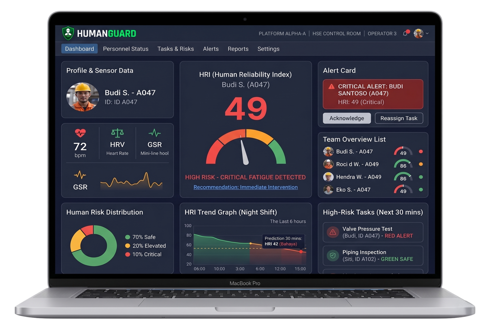
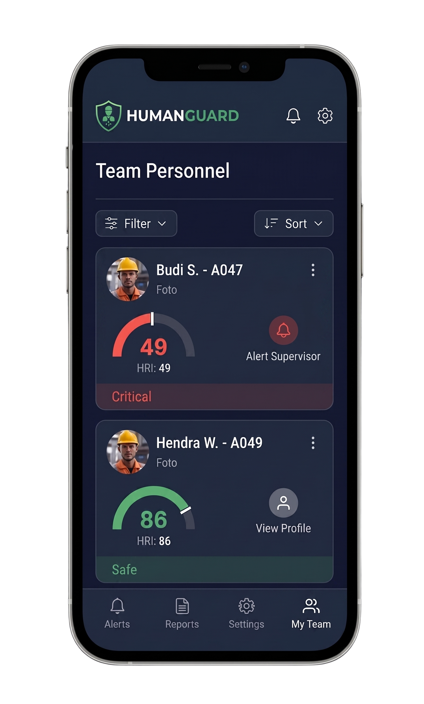

Mengubah paradigma K3 dari reaktif menjadi prediktif. Mencegah insiden sebelum terjadi dengan memantau kondisi kognitif dan fisik pekerja secara real-time.


Mayoritas kecelakaan operasi diakibatkan oleh faktor manusia (kelelahan & stres). Paradigma K3 reaktif saat ini tidak lagi cukup untuk operasional berisiko tinggi.
Satu insiden fatal memakan biaya rata-rata $3 Juta USD yang meliputi kompensasi medis, hukum, biaya investigasi, hingga perbaikan kerusakan fasilitas.
Menghindari downtime dan shutdown fasilitas secara mendadak yang berpotensi menyelamatkan laju produksi hingga 15.000 BBLS Minyak dan 70 MMSCF Gas.
Bagian ini akan diisi dengan detail teknologi AI/ML Anda.
Bagian ini akan diisi dengan 4 Lapisan Arsitektur (Wearable, Edge, AI, Dashboard).
Bagian ini akan diisi dengan potensi penghematan (BBLS/MMSCF) dan ROI.
Bagian ini akan diisi dengan profil tim Anda.